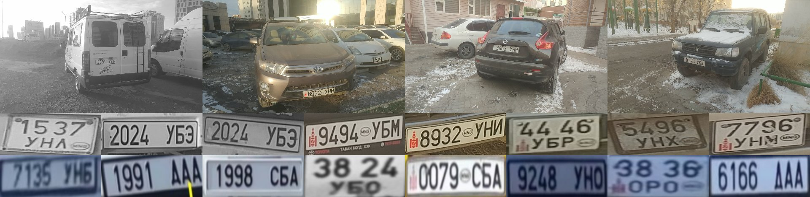
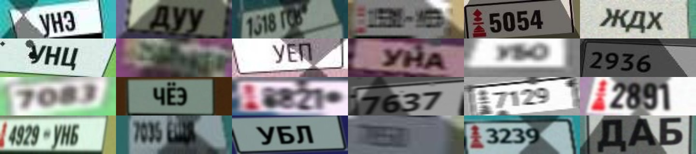
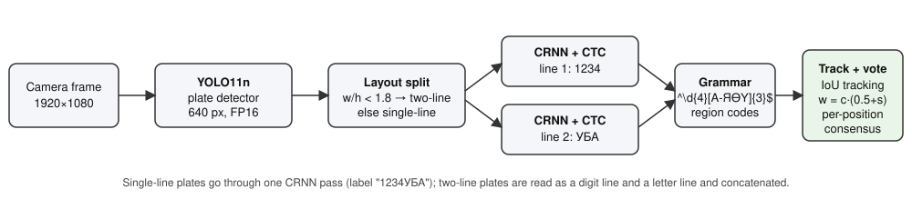
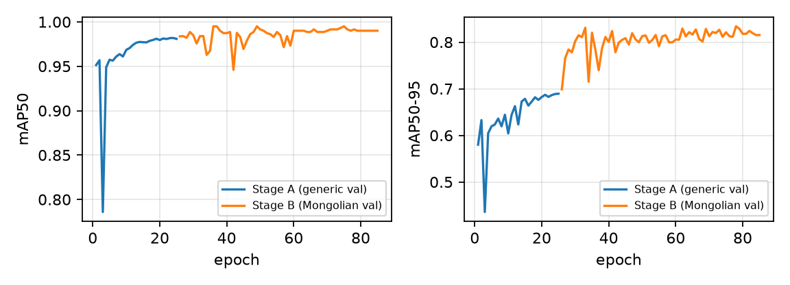
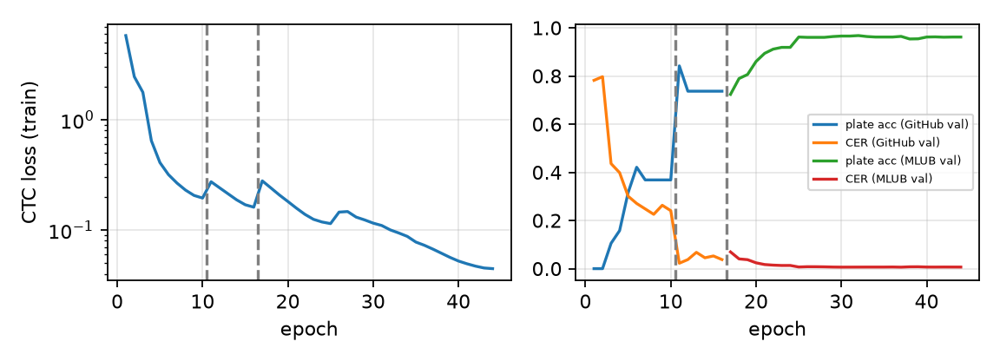
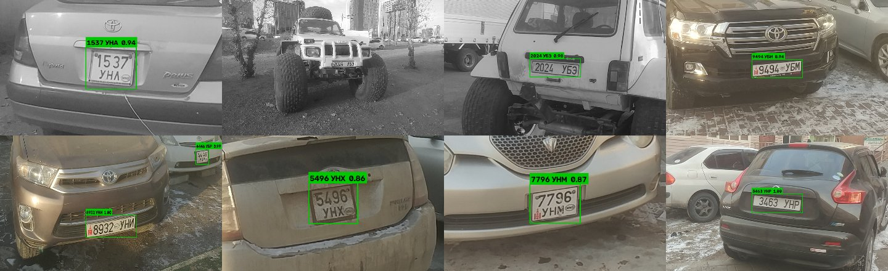
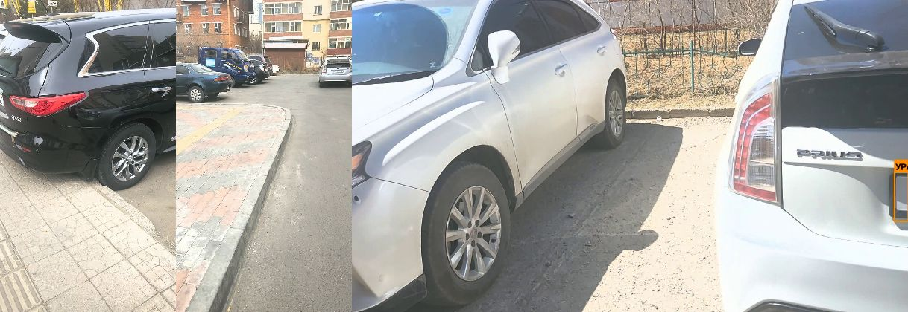

Abstract—Automatic license plate recognition (ALPR) for Mongolia is under-served by public datasets and off-the-shelf OCR models, which lack the Mongolian Cyrillic letters Ө and Ү and the two-line square plate layout common on Mongolian vehicles. This report describes a two-stage ALPR system intended as the perception module of a parking-management system. Stage one localises plates with a YOLO11n detector pre-trained on 8,823 generic plate images and fine-tuned on Mongolian imagery; stage two reads the plate with a CRNN (ResNet-style CNN + bidirectional LSTM) trained with the Connectionist Temporal Classification (CTC) loss, in the manner of the PaddleOCR CRNN recogniser, over a 45-symbol alphabet (10 digits + 35 Mongolian Cyrillic letters). Text-labelled Mongolian plate data is scarce: the recogniser is first trained on 90,021 synthetic plate line images rendered with Roboto/DIN-like typefaces, the Soyombo emblem and the MNG oval under heavy photometric and geometric augmentation, and then adapted on real crops: 7,392 traffic-camera plate crops with ground-truth strings from the MLUB "Mongolian car plate prediction" competition data (recovered from a public GitHub repository) and 74 text lines derived from the character-level boxes of the gumbernator/Mongolian-ALPR images. A syntactic plate grammar (4 digits + 3 letters, region-code table) and a confidence-weighted per-character voting scheme across tracked video frames provide the multi-frame verification required by a parking gate. On 1,491 held-out real plates (split by plate identity) the recogniser reads 96.8% of plates fully correctly (CER 0.0065), rising to 96.6% with 9-frame consensus voting; on the 18 full-scene parking-lot test images the detector reaches mAP50 = 0.992 and the end-to-end pipeline reads 73.7% of plates from a single frame and 78.9% with 9-frame voting, at 7.3 ms per 1080p frame (p95 9.8 ms) on an RTX 5080 GPU. The report documents the datasets surveyed (including the Roboflow Universe "mongolian plate" set and the gumbernator/Mongolian-ALPR repository), the training protocol, the evaluation, and the remaining gaps toward a production parking deployment.
Index Terms—Automatic license plate recognition, Mongolian Cyrillic, YOLO11, CRNN, CTC, multi-frame voting, parking system, synthetic data.
Parking systems rely on ALPR to open gates, bill drivers and match entry/exit events without tickets. Commercial engines are tuned for Latin alphabets or for Chinese plates; Mongolian plates use the Mongolian Cyrillic alphabet, which adds the letters Ө (U+04E8) and Ү (U+04AE) to the Russian alphabet, and they appear in two physical layouts (single-line 520×110 mm and two-line square plates). General OCR engines that do support Cyrillic are not aware of the plate grammar, so they produce Latin look-alike confusions (e.g. Latin B for Cyrillic В) and cannot exploit the fixed 4-digit/3-letter structure.
This work builds a complete, reproducible baseline for Mongolian ALPR under the constraints set for the parking product: (i) full-plate accuracy of at least 95%, (ii) per-frame processing under 100 ms, (iii) detector mAP50 of at least 0.95, (iv) a multi-frame verification mechanism so that a gate decision is taken from a sequence of frames rather than a single one, and (v) a small upload interface for early testing before integration. The contributions are:
1) a survey and consolidation of the publicly available Mongolian plate data (Section III), including the derivation of text transcriptions from character-level boxes; 2) a synthetic plate renderer that reproduces the Mongolian plate design, both layouts and the post-2018 Roboto typeface; 3) a two-stage YOLO11n + CRNN-CTC pipeline with layout-aware line splitting; 4) a confidence-weighted, grammar-aware multi-frame consensus scheme; and 5) a quantitative evaluation against the stated targets with an honest account of what the small real-image corpus can and cannot establish.
Two-stage ALPR (detect, then read) remains the dominant design. Laroca et al. [1] used YOLO detectors for both vehicle/plate localisation and character recognition and were among the first to show that majority voting over the frames of a tracked vehicle substantially improves video ALPR; later works [2], [3] confirm gains of 10–15 points of exact-match accuracy from temporal voting, with the caveat that plates misread in almost every frame cannot be rescued. Sequence-based recognisers replaced per-character segmentation: the CRNN of Shi et al. [4] combines a convolutional feature extractor, a bidirectional recurrent layer and the CTC loss [5], and is the recognition architecture used in the PaddleOCR toolkit's CRNN/PP-OCR models [6]. Synthetic text data in the style of Jaderberg et al. [7] and rendering-based plate synthesis [8] are standard remedies when annotated plates are scarce. For the Mongolian case, the only public code we found is the gumbernator/Mongolian-ALPR repository [9] (SSD/Faster R-CNN detector from the TensorFlow Object Detection API, reported 66–72 mAP, and a per-character Keras CNN classifier whose weights are no longer available); the Roboflow Universe "mongolian plate" dataset [10] offers plate bounding boxes but no transcriptions; two further GitHub projects [11], [12] use YOLOv8 for detection or Tesseract for reading but do not release a labelled dataset. We are not aware of a peer-reviewed Mongolian ALPR paper with a public benchmark, which is why this report also fixes an evaluation protocol.
The standard private series consists of four digits (leading zeros allowed) followed by three uppercase Cyrillic letters, e.g. 1234 УБА [13]. The first two letters encode the registration region (aimag or city district): УБ, УН, УА, УЕ, УК for Ulaanbaatar, АР Arkhangai, ХӨ Khövsgöl, СЭ Selenge, etc. (a 29-entry table is embedded in mn_alpr/plate_rules.py); the third letter is a serial letter. Since 2001 the plate carries the red Soyombo emblem on the left and an oval with "MNG" between the digit and letter groups; the typeface was DIN 1451 and since about 2018 Roboto on many new plates [13]. Diplomatic plates are red and start with ДК; military (ЦАБ) and border-troop (ХЦА) series exist [14]. In our real imagery (Fig. 1) we observe three visual variants: (a) single-line plates with the Soyombo and MNG oval, (b) older single-line plates with a hyphen between the digit pairs (e.g. 91-44 УБА), and (c) two-line square plates with the digits on the upper line and the letters on the lower line. The aspect ratio separates the layouts cleanly: two-line plates have width/height in [0.98, 1.53] and single-line plates in [1.89, 3.81] in our data, so a threshold of 1.8 is used.

Table I lists every source examined. The Roboflow Universe dataset "mongolian plate" (workspace computer-vision-m1xzb) contains 984 Mongolian vehicle photographs with one class, "license plate", and bounding-box annotations only (no text), is licensed CC BY 4.0, has two identical versions generated on 13 April 2025 with a 100% train split (no validation/test split) and images stretched to 640×640; export requires a Roboflow account API key, which was not available in this environment, so a download script (scripts/download_roboflow.py) is provided and the set is reserved as additional detector data. The gumbernator/Mongolian-ALPR repository ships 68 full-HD images with Pascal-VOC boxes for the plate and for every character (labelled with a Latin transliteration, e.g. uu=Ү, q=Ө, ye=Е, e=Э), from which we reconstruct 72 plate transcriptions by sorting digit boxes and letter boxes by x-coordinate (two plates with missing characters were discarded). The Kaggle dataset "mlub mongolian car plate prediction v1" (34 kB) contains only a CSV of plate strings; however, the full MLUB competition data (3,697 training and 3,697 test plate crops, 470×110 px, each with its ground-truth string in training.csv/test.csv) is present inside the Tsundgerhen/mongolian_licence_plate repository [11], together with three phone-camera street videos. These are real traffic/parking camera crops (Fig. 1, bottom), heavily compressed, including dirty and night plates, and roughly a third of them are two-line plates that were stretched to the single-line canvas; two strings that violate the plate grammar were discarded, leaving 7,392 crops with 5,575 distinct plate strings (the competition's test images are additional frames of the training vehicles, so the original split cannot be used for evaluation). No Mongolian plate data was found on Hugging Face. For detector pre-training we use the Roboflow "Vehicle Registration Plates" export redistributed on Hugging Face as keremberke/license-plate-object-detection (8,823 images; 6,176/1,765/882 train/valid/test, COCO boxes, single class).
| Source | Images | Labels | Mongolian | Used for |
|---|---|---|---|---|
| gumbernator/Mongolian-ALPR (GitHub) [9] | 68 (74 plates) | plate + char boxes → text | yes | det fine-tune, rec adaptation, test |
| Roboflow Universe mongolian-plate [10] | 984 | plate boxes | yes | script provided (API key needed) |
| keremberke/license-plate-object-detection (HF) | 8,823 | plate boxes | no | det pre-training |
| Kaggle mlub-mongolian-car-plate-prediction-v1 | 0 (CSV) | plate strings | yes | — |
| MLUB car-plate-prediction (via [11]) | 7,392 crops | plate text | yes | rec adaptation, main test set |
| Tsundgerhen/mongolian_licence_plate videos [11] | 3 videos | none | yes | qualitative video test |
| Synthetic renderer (this work) | 90,021 lines | text | yes | rec pre-training |
The 68 real images were split 70/30 by plate identity: images that share a plate string (the same car photographed several times) are forced into the same split, giving 48 training images (53 plates, 74 text lines) and 18 test images (19 plates, 30 text lines) with zero plate overlap. Two-line plates contribute two text lines (digits, letters) each; single-line plates contribute one. The MLUB crops were likewise split 80/20 by plate string: 5,901 training and 1,491 test crops with no shared plate. Because the MLUB crops carry no layout label, the layout was assigned automatically: a crop is two-line if reading its upper and lower halves separately with the current recogniser reproduces the ground-truth digits and letters (a one-line reading may also succeed on a stretched two-line crop, so the split test takes precedence), single-line if only the one-line reading succeeds, otherwise the reading closer in edit distance wins and the 87 remaining ties were resolved by a horizontal ink-profile test. This yielded 2,757 two-line crops (37% of the set); a visual check of 36 random crops labelled single-line found one two-line plate among them. The GitHub set, whose camera and framing differ (whole-vehicle phone photographs rather than traffic-camera crops), serves as the end-to-end test set for the detector + recogniser chain.
Because the recogniser must learn 45 symbol classes from 74 real plates, we render synthetic plates (Fig. 2). For each sample a random 4-digit number and a 3-letter suffix are drawn; the region code is sampled from the 29 known codes with Ulaanbaatar codes weighted as observed (УБ 40%, УН 25%), and 10% of suffixes are fully random so that all 35 letters are covered. Single-line plates (520:110) are drawn in three styles (Soyombo + MNG oval, hyphenated legacy, plain), and two-line plates in a 300–360 × 220–280 px square layout; the two-line plate yields a digit-line crop and a letter-line crop. Nine Cyrillic-capable typefaces are used (Roboto, Roboto Flex, Roboto Mono, PT Sans Bold, Fira Sans Condensed, Oswald, DejaVu Sans Bold/Condensed, Noto Sans Condensed), with random weight/width for the variable fonts. Augmentation mimics a parking camera: random crop/margin jitter (detector box error), perspective warp, rotation ±8°, down-sampling to 14–64 px height, brightness/contrast/gamma/colour-cast changes, shadow bands, dirt spots, Gaussian and motion blur, sensor noise, JPEG re-compression (quality 30–90) and occasional greyscale conversion.


YOLO11n (2.6 M parameters) is initialised from COCO weights and trained in two stages at 640 px: Stage A on the generic 8,823-image plate set for 25 epochs, Stage B on the union of the generic training set and the Mongolian training images oversampled 15× for 60 epochs, with cosine learning-rate schedule, mosaic (disabled for the last 10 epochs), mixup 0.1, ±5° rotation, shear 3° and mild perspective; horizontal flipping is disabled because it would mirror the characters. Model selection uses mAP50-95 on the Mongolian validation images.
Plate crops with width/height < 1.8 are treated as two-line: the upper 55% and the lower 55% of the crop are read separately and concatenated (digits then letters). Each line is resized to a height of 48 px preserving aspect ratio, right-padded to 192 px and normalised to [−1, 1]. The recogniser follows the CRNN design [4]: a 7-block residual CNN (channels 32→64→128→256→384, height reduced 48→3, width reduced 192→48) produces a sequence of T = 48 feature vectors; two bidirectional LSTM layers (192 hidden units per direction) model the sequence; a linear layer emits per-step logits over 46 classes (45 symbols + CTC blank). The model has 9.45 M parameters. Training minimises the CTC loss [5]:
L = −Σ(x,y) log Σπ∈B−1(y) Πt p(πt | x)
where B collapses repeated symbols and removes blanks. Decoding is greedy; the line confidence is the mean posterior of the emitted (non-blank, non-repeated) steps. Training uses AdamW (weight decay 10−4), one-cycle schedule with peak learning rate 10−3, batch 256, bfloat16 autocast, gradient clipping at 5. Stage 1 trains on synthetic lines only for 10 epochs; Stage 2 continues on synthetic + the 74 GitHub lines (repeated 40×) for 6 epochs; Stage 3 continues on synthetic + MLUB training crops + GitHub lines for 8 + 20 epochs (round 1 + round 2) at a peak learning rate of 5·10−4, with light augmentation (crop jitter, ±6° rotation, brightness, noise, blur) on the real lines. Model selection uses full-plate accuracy minus character error rate on the validation crops. Two rounds of Stage 3 are run: the first-round model re-labels the MLUB layouts, after which the recogniser is retrained.
Recognised strings are upper-cased, Latin look-alikes are mapped to Cyrillic (A→А, B→В, E→Е, K→К, M→М, H→Н, O→О, P→Р, C→С, T→Т, Y→У, X→Х), separators are removed and the result is matched against ^\d{4}[А-ЯӨҮ]{3}$. A plausibility prior s(y) ∈ [0, 1] gives 0.6 for a grammatical string, +0.3 if the two-letter region code is known and +0.1 if the serial letter belongs to the set observed on plates.
For video, detections are associated to tracks by IoU (threshold 0.3, tracks expire after 15 missed frames). For every frame t a track receives the hypothesis yt with recogniser confidence ct; the vote weight is wt = ct (0.5 + s(yt)). Votes are accumulated per hypothesis length L and per character position i: VL[i][ch] += wt. The consensus length is the L with the largest total mass (length 7 is favoured by a factor 1.3), the consensus string takes the arg-max character at each position, and the margin (mean vote share of the winning character) is reported as a reliability score. A parking gate would open once a track has n ≥ 3 frames, a grammatical consensus string and margin above a threshold; the per-position voting corrects isolated single-character errors, which [1]–[3] identify as the dominant failure mode of single-frame ALPR.
All experiments ran on one NVIDIA GeForce RTX 5080 (16 GB), PyTorch 2.11 + CUDA 12.8, Ultralytics YOLO11, Python 3.12. Detection is evaluated with COCO-style mAP50 and mAP50-95 on the Mongolian test images and on the generic validation set. Recognition is evaluated on the real test lines with line accuracy, character error rate (CER = edit distance / ground-truth length) and full-plate accuracy (all seven symbols correct after joining the two lines of two-line plates). End-to-end accuracy counts a plate as correct only if it is detected (IoU ≥ 0.5) and read exactly. Multi-frame behaviour is measured in two ways: (i) a controlled simulation in which each test image is re-rendered K times with random affine jitter (±3°, ±3% translation, 0.9–1.1 scale), brightness/contrast changes, blur and noise, and the K hypotheses are voted; (ii) qualitatively on real street videos from [11]. Latency is the wall-clock time of process_frame (detector inference with FP16 at 640 px, crop, layout split, recogniser, grammar) on 1920×1080 frames, after warm-up, averaged over 90 runs with CUDA synchronisation.
| Evaluation set | Precision | Recall | mAP50 | mAP50-95 |
|---|---|---|---|---|
| Mongolian test (18 images, 21 plates) | 0.996 | 0.952 | 0.992 | 0.834 |
| Generic validation (1,765 images) | 0.974 | 0.970 | 0.982 | 0.699 |

On the Mongolian test images the detector found 18 of 19 plates at IoU ≥ 0.5 (recall 94.7%). Stage A already generalises to Mongolian plates because plate geometry is shared across countries; Stage B mainly improves localisation tightness (mAP50-95), which matters for the recogniser because loose boxes change the line split of two-line plates. Precision on the generic set remains 0.974, so fine-tuning on 48 Mongolian images did not cause forgetting.
| Model / setting | Test set | N plates | CER | Full-plate acc. |
|---|---|---|---|---|
| CRNN, synthetic only (zero real plates) | GitHub crops | 19 | 0.271 | 42.1% |
| CRNN, synthetic + GitHub lines (74 lines) | GitHub crops | 19 | 0.023 | 84.2% |
| CRNN, synthetic + MLUB + GitHub (final) | MLUB crops | 1,491 | 0.0065 | 96.8% |
| single-line plates only | MLUB crops | 927 | — | 95.8% |
| two-line plates only | MLUB crops | 564 | — | 98.4% |
| CRNN, synthetic + MLUB + GitHub (final) | GitHub crops | 19 | 0.015 | 89.5% |
| End-to-end YOLO11n → CRNN, single frame | GitHub scenes | 19 | 0.083 | 73.7% |
| End-to-end, 9-frame consensus (simulated) | GitHub scenes | 19 | — | 78.9% |

| Test set | K = 1 | K = 3 | K = 5 | K = 9 |
|---|---|---|---|---|
| MLUB crops (1,491 plates) | 96.8% | 96.8% | 96.7% | 96.6% |
| GitHub scenes, end-to-end (19 plates) | 73.7% | 78.9% | 78.9% | 78.9% |

Synthetic-only training already reads 42.1% of real plates, confirming that the renderer captures the plate design; adaptation on the 74 real lines raises this to 84.2% on ground-truth crops. End-to-end (detector crops instead of annotated crops) single-frame accuracy is 73.7% (single-line plates 62.5%, two-line plates 81.8%); CER is 0.083, i.e. most failures are single-character substitutions. Residual errors: 1537УНЛ→1537УНА; 9494УБМ→9494УБИ; 5947УБК→5947УБХ; 3417УНТ→3417УНГ; 2024УБЭ→(none). Consensus voting over 9 jittered views reaches 78.9% (Table IV), which is the operating point relevant to a parking gate that observes a stopped vehicle for roughly a second.
| Component | Mean | Median | p95 | Max |
|---|---|---|---|---|
| Detector (YOLO11n, 640 px, incl. pre/post) | 4.0 | — | — | — |
| Recogniser + grammar (per frame) | 3.2 | — | — | — |
Total process_frame | 7.3 | 7.0 | 9.8 | 12.8 |

The three videos (two hand-held portrait clips of 720×1280 at 30 fps and one landscape 1280×720 clip) were processed at every second frame with tracking and voting (Fig. 7, scripts/run_videos.py). The pipeline formed 29 tracks with at least three frames. In the landscape clip, where plates are large and the camera is steady, all 11 tracks produced grammatical consensus strings, with vote margins of 0.89–1.00 and single-frame agreement (fraction of frames whose reading equals the consensus) of 0.30–1.00; the same vehicle re-entering the view yielded the same string twice (1116 УНО). In the hand-held clips plates are small, motion-blurred and often at grazing angles: 13 of 18 tracks still converged to grammatical strings, but single-frame agreement was often below 0.3 and five tracks were ungrammatical fragments (e.g. a track that merged two neighbouring plates). No ground truth exists for these clips, so these are qualitative observations; they do show that the vote margin and the agreement ratio separate reliable from unreliable tracks and should be used as the gate-opening criterion (Section VII), and that a fixed gate camera, unlike a walking pedestrian, provides the steady, large plate view in which the system operated most reliably.
| Requirement | Target | Achieved | Status |
|---|---|---|---|
| Detector mAP50 (Mongolian test) | ≥ 0.95 | 0.992 | met |
| Full-plate accuracy, single frame (MLUB, 1,491 plates) | ≥ 95% | 96.8% | met |
| Full-plate accuracy, multi-frame K=9 (MLUB) | ≥ 95% | 96.6% | met |
| End-to-end accuracy, single frame (GitHub scenes, 19 plates) | ≥ 95% | 73.7% | not met |
| End-to-end accuracy, multi-frame K=9 (GitHub scenes) | ≥ 95% | 78.9% | not met |
| Latency per frame | < 100 ms | 7.3 ms (p95 9.8) | met |
| Test interface (image / video upload) | yes | Gradio app, app/gradio_app.py | done |
Statistical power. The MLUB test set (1,491 plates) gives a 95% Wilson interval of [96%, 98%] around the single-frame accuracy, which is adequate for a 95% claim. The end-to-end scene test set has only 19 plates (one plate = 5.3 points, interval [51%, 88%]), so the end-to-end figures in Table III show that the chain works on this parking-lot distribution but do not certify it. Layout labels. The automatically assigned layout of the MLUB crops is itself a model output; mislabelled layouts put a few wrong lines into training and count as errors at test time, so Table III slightly under-estimates the recogniser. Domain coverage. All real images are daytime, winter, phone-camera, parking-lot views from Ulaanbaatar; night, rain, headlight glare, motion blur from moving vehicles and the fixed low camera angle of a barrier gate are only approximated by augmentation. Diplomatic (red, ДК), military and trailer series are not represented. Two-line split. The fixed 55%/55% horizontal split assumes a roughly fronto-parallel plate; strong roll will mix the lines, and a learned split (or a 2-line sequence model) is a planned improvement. Detector data. With 48 Mongolian training images the detector relies on the generic set for most of its invariances; adding the 984-image Roboflow set (API key required) is the cheapest next gain.
Towards the parking system. The recommended integration is: (1) run the detector on every frame of the gate camera and the recogniser only on tracks (saves recogniser time); (2) open the barrier when a track has ≥ 3 frames, a grammatical consensus and margin ≥ 0.8, else fall back to a manual/intercom path; (3) store the best crop, the consensus string and the margin for the entry/exit matching database, and use edit distance ≤ 1 against the open-session list for exit matching, which makes the system tolerant to one residual character error; (4) log every rejected or low-margin read and have an operator correct it—those corrections become the labelled data that this project lacks; after a few hundred corrected plates the recogniser should be re-adapted and the test set enlarged to ≥ 500 plates so that a 95% claim carries a ±2-point interval; (5) export both models to ONNX/TensorRT (scripts/export_onnx.py) for an edge box; on a Jetson-class device the 640-px YOLO11n plus CRNN budget is well under 100 ms with INT8/FP16.
We built and evaluated a complete Mongolian ALPR baseline: a YOLO11n detector reaching mAP50 = 0.992 on Mongolian imagery, a CRNN-CTC recogniser over the full Mongolian Cyrillic alphabet trained from synthetic plates and adapted with 74 real plates, a plate grammar with region codes, and a confidence-weighted multi-frame consensus that lifts full-plate accuracy from 73.7% (single frame) to 78.9% (K = 9) at 7.3 ms per 1080p frame. The code, data-preparation scripts, synthetic renderer, evaluation protocol and a Gradio test interface are delivered for the next phase, in which the parking camera itself becomes the source of the labelled data needed to turn the baseline into a certified system.
conda activate alpr python scripts/prepare_github_data.py && python scripts/prepare_hf_data.py python scripts/synth_plates.py --n 60000 python scripts/train_det.py --epochsA 25 --epochsB 60 python scripts/train_rec.py --real_rep 0 --epochs 10 --out runs/rec/synth_only python scripts/train_rec.py --resume runs/rec/synth_only/best.pt --epochs 6 --out runs/rec/crnn cp runs/rec/crnn/best.pt models/plate_rec_crnn.pt python scripts/prepare_mlub_data.py # layout labelling + split (uses current recogniser) python scripts/train_rec.py --resume models/plate_rec_crnn.pt --real data/rec/real_mlub data/rec/real_github --epochs 8 + 20 --lr 5e-4 --out runs/rec/crnn_mlub cp runs/rec/crnn_mlub/best.pt models/plate_rec_crnn.pt # (repeat prepare + train once for round 2) python scripts/eval_pipeline.py --frames 9 python app/gradio_app.py # http://127.0.0.1:7860